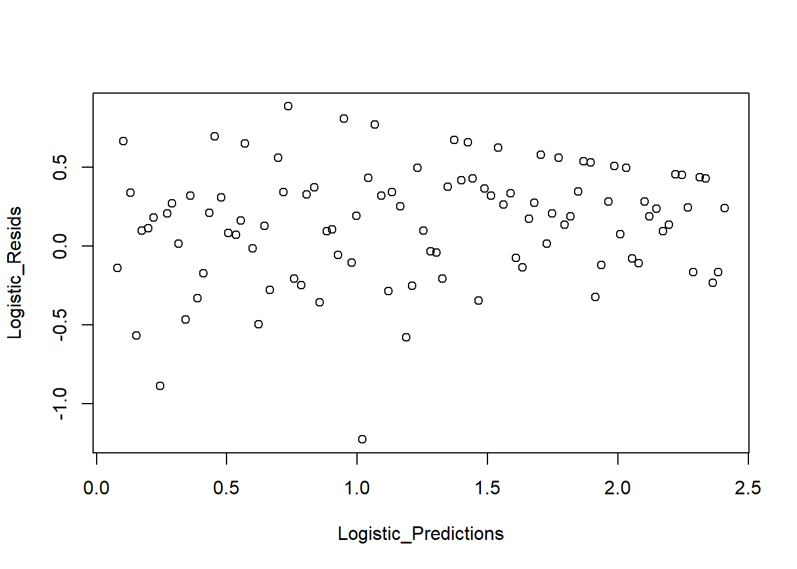
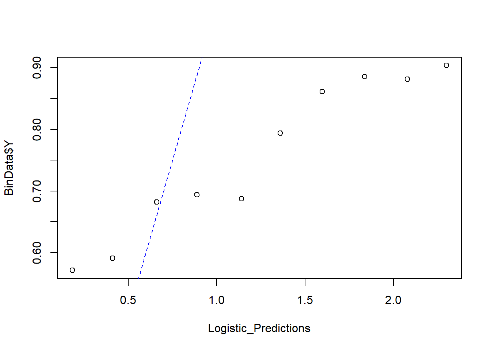
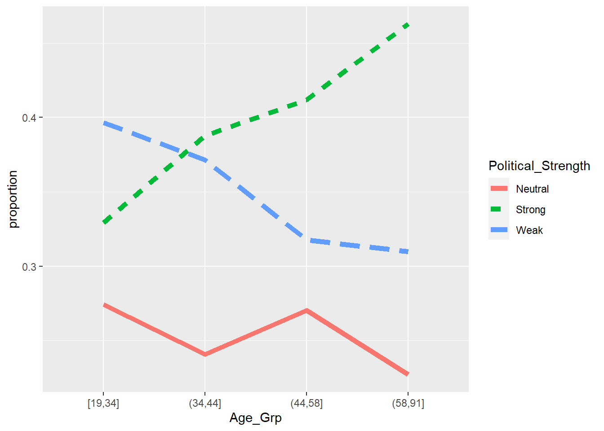

6.3 Generalized Linear Models
Even though we call it generalized linear model, it is still under the paradigm of non-linear regression, because the form of the regression model is non-linear. The name generalized linear model derived from the fact that we have \(\mathbf{x'_i \beta}\) (which is linear form) in the model.
6.3.1 Logistic Regression
\[ p_i = f(\mathbf{x}_i ; \beta) = \frac{exp(\mathbf{x_i'\beta})}{1 + exp(\mathbf{x_i'\beta})} \] Equivalently,
\[ logit(p_i) = log(\frac{p_i}{1+p_i}) = \mathbf{x_i'\beta} \] where \(\frac{p_i}{1+p_i}\)is the odds.
In this form, the model is specified such that a function of the mean response is linear. Hence, Generalized Linear Models
The likelihood function
\[ L(p_i) = \prod_{i=1}^{n} p_i^{Y_i}(1-p_i)^{1-Y_i} \] where \(p_i = \frac{\mathbf{x'_i \beta}}{1+\mathbf{x'_i \beta}}\) and \(1-p_i = (1+ exp(\mathbf{x'_i \beta}))^{-1}\)
Hence, our objective function is
\[ Q(\beta) = log(L(\beta)) = \sum_{i=1}^n Y_i \mathbf{x'_i \beta} - \sum_{i=1}^n log(1+ exp(\mathbf{x'_i \beta})) \]
we could maximize this function numerically using the optimization method above, which allows us to find numerical MLE for \(\hat{\beta}\). Then we can use the standard asymptotic properties of MLEs to make inference.
Property of MLEs is that parameters are asymptotically unbiased with sample variance-covariance matrix given by the inverse Fisher information matrix
\[ \hat{\beta} \dot{\sim} AN(\beta,[\mathbf{I}(\beta)]^{-1}) \] where the Fisher Information matrix, \(\mathbf{I}(\beta)\) is
\[ \begin{align} \mathbf{I}(\beta) &= E[\frac{\partial \log(L(\beta))}{\partial (\beta)}\frac{\partial \log(L(\beta))}{\partial \beta'}] \\ &= E[(\frac{\partial \log(L(\beta))}{\partial \beta_i} \frac{\partial \log(L(\beta))}{\partial \beta_j})_{ij}] \end{align} \] Under regularity conditions, this is equivalent to the negative of the expected value of the Hessian Matrix
\[ \begin{align} \mathbf{I}(\beta) &= -E[\frac{\partial^2 \log(L(\beta))}{\partial \beta \partial \beta'}] \\ &= -E[(\frac{\partial^2 \log(L(\beta))}{\partial \beta_i \partial \beta_j})_{ij}] \end{align} \]
Example:
\[ x_i' \beta = \beta_0 + \beta_1 x_i \]
\[ - \frac{\partial^2 \ln(L(\beta))}{\partial \beta^2_0} = \sum_{i=1}^n \frac{\exp(x'_i \beta)}{1 + \exp(x'_i \beta)} - [\frac{\exp(x_i' \beta)}{1+ \exp(x'_i \beta)}]^2 = \sum_{i=1}^n p_i (1-p_i) \\ - \frac{\partial^2 \ln(L(\beta))}{\partial \beta^2_1} = \sum_{i=1}^n \frac{x_i^2\exp(x'_i \beta)}{1 + \exp(x'_i \beta)} - [\frac{x_i\exp(x_i' \beta)}{1+ \exp(x'_i \beta)}]^2 = \sum_{i=1}^n x_i^2p_i (1-p_i) \\ - \frac{\partial^2 \ln(L(\beta))}{\partial \beta_0 \partial \beta_1} = \sum_{i=1}^n \frac{x_i\exp(x'_i \beta)}{1 + \exp(x'_i \beta)} - x_i[\frac{\exp(x_i' \beta)}{1+ \exp(x'_i \beta)}]^2 = \sum_{i=1}^n x_ip_i (1-p_i) \\ \]
Hence,
\[ \mathbf{I} (\beta) = \left[ \begin{array} {cc} \sum_i p_i(1-p_i) && \sum_i x_i p_i(1-p_i) \\ \sum_i x_i p_i(1-p_i) && \sum_i x_i^2 p_i(1-p_i) \end{array} \right] \]
Inference
Likelihood Ratio Tests
To formulate the test, let \(\beta = [\beta_1', \beta_2']'\). If you are interested in testing a hypothesis about \(\beta_1\), then we leave \(\beta_2\) unspecified (called nuisance parameters). \(\beta_1\) and \(\beta_2\) can either a vector or scalar, or \(\beta_2\) can be null.
Example: \(H_0: \beta_1 = \beta_{1,0}\) (where \(\beta_{1,0}\) is specified) and \(\hat{\beta}_{2,0}\) be the MLE of \(\beta_2\) under the restriction that \(\beta_1 = \beta_{1,0}\). The likelihood ratio test statistic is
\[ -2\log\Lambda = -2[\log(L(\beta_{1,0},\hat{\beta}_{2,0})) - \log(L(\hat{\beta}_1,\hat{\beta}_2))] \] where
- the first term is the value fo the likelihood for the fitted restricted model
- the second term is the likelihood value of the fitted unrestricted model
Under the null,
\[ -2 \log \Lambda \sim \chi^2_{\upsilon} \] where \(\upsilon\) is the dimension of \(\beta_1\)
We reject the null when \(-2\log \Lambda > \chi_{\upsilon,1-\alpha}^2\)
Wald Statistics
Based on
\[ \hat{\beta} \sim AN (\beta, [\mathbf{I}(\beta)^{-1}]) \] \[ H_0: \mathbf{L}\hat{\beta} = 0 \] where \(\mathbf{L}\) is a q x p matrix with q linearly independent rows. Then
\[ W = (\mathbf{L\hat{\beta}})'(\mathbf{L[I(\hat{\beta})]^{-1}L'})^{-1}(\mathbf{L\hat{\beta}}) \] under the null hypothesis
Confidence interval
\[ \hat{\beta}_i \pm 1.96 \hat{s}_{ii}^2 \] where \(\hat{s}_{ii}^2\) is the i-th diagonal of \(\mathbf{[I(\hat{\beta})]}^{-1}\)
If you have
- large sample size, the likelihood ratio and Wald tests have similar results.
- small sample size, the likelihood ratio test is better.
Logistic Regression: Interpretation of \(\beta\)
For single regressor, the model is
\[ logit\{\hat{p}_{x_i}\} \equiv logit (\hat{p}_i) = \log(\frac{\hat{p}_i}{1 - \hat{p}_i}) = \hat{\beta}_0 + \hat{\beta}_1 x_i \]
When \(x= x_i + 1\)
\[ logit\{\hat{p}_{x_i +1}\} = \hat{\beta}_0 + \hat{\beta}(x_i + 1) = logit\{\hat{p}_{x_i}\} + \hat{\beta}_1 \]
Then,
\[ logit\{\hat{p}_{x_i +1}\} - logit\{\hat{p}_{x_i}\} = log\{odds[\hat{p}_{x_i +1}]\} - log\{odds[\hat{p}_{x_i}]\} \\ = log(\frac{odds[\hat{p}_{x_i + 1}]}{odds[\hat{p}_{x_i}]}) = \hat{\beta}_1 \]
and
\[ exp(\hat{\beta}_1) = \frac{odds[\hat{p}_{x_i + 1}]}{odds[\hat{p}_{x_i}]} \] the estimated odds ratio
the estimated odds ratio, when there is a difference of c units in the regressor x, is \(exp(c\hat{\beta}_1)\). When there are multiple covariates, \(exp(\hat{\beta}_k)\) is the estimated odds ratio for the variable \(x_k\), assuming that all of the other variables are held constant.
Inference on the Mean Response
Let \(x_h = (1, x_{h1}, ...,x_{h,p-1})'\). Then
\[ \hat{p}_h = \frac{exp(\mathbf{x'_h \hat{\beta}})}{1 + exp(\mathbf{x'_h \hat{\beta}})} \]
and \(s^2(\hat{p}_h) = \mathbf{x'_h[I(\hat{\beta})]^{-1}x_h}\)
For new observation, we can have a cutoff point to decide whether y = 0 or 1.
6.3.1.1 Application
library(kableExtra)
library(dplyr)
library(pscl)
library(ggplot2)
library(faraway)
library(nnet)
library(agridat)
library(nlstools)Logistic Regression
\(x \sim Unif(-0.5,2.5)\). Then \(\eta = 0.5 + 0.75 x\)
set.seed(23) #set seed for reproducibility
x <- runif(1000,min = -0.5,max = 2.5)
eta1 <- 0.5 + 0.75*xPassing \(\eta\)’s into the inverse-logit function, we get
\[ p = \frac{\exp(\eta)}{1+ \exp(\eta)} \]
where \(p \in [0,1]\)
Then, we generate \(y \sim Bernoulli(p)\)
p <- exp(eta1)/(1+exp(eta1))
y <- rbinom(1000,1,p)
BinData <- data.frame(X = x, Y = y)Model Fit
Logistic_Model <- glm(formula = Y ~ X,
family = binomial, # family = specifies the response distribution
data = BinData)
summary(Logistic_Model)##
## Call:
## glm(formula = Y ~ X, family = binomial, data = BinData)
##
## Deviance Residuals:
## Min 1Q Median 3Q Max
## -2.2317 0.4153 0.5574 0.7922 1.1469
##
## Coefficients:
## Estimate Std. Error z value Pr(>|z|)
## (Intercept) 0.46205 0.10201 4.530 5.91e-06 ***
## X 0.78527 0.09296 8.447 < 2e-16 ***
## ---
## Signif. codes: 0 '***' 0.001 '**' 0.01 '*' 0.05 '.' 0.1 ' ' 1
##
## (Dispersion parameter for binomial family taken to be 1)
##
## Null deviance: 1106.7 on 999 degrees of freedom
## Residual deviance: 1027.4 on 998 degrees of freedom
## AIC: 1031.4
##
## Number of Fisher Scoring iterations: 4nlstools::confint2(Logistic_Model)## 2.5 % 97.5 %
## (Intercept) 0.2618709 0.6622204
## X 0.6028433 0.9676934OddsRatio <- coef(Logistic_Model) %>% expBased on the odds ratio, when
- \(x = 0\) , the odds of success of 1/59
- \(x = 1\), the odds of success increase by a factor of 2.19 (i.e., 119.29% increase).
Deviance Tests
\[ H_0: \text{No variables are related to the response (i.e., model with just the intercept)} \\ H_1: \text{at least one variable is related to the response} \]
Test_Dev = Logistic_Model$null.deviance - Logistic_Model$deviance
p_val_dev <- 1-pchisq(q = Test_Dev, df = 1)Since we see the p-value of 0, we reject the null that no variables are related to the response
Deviance residuals
Logistic_Resids <- residuals(Logistic_Model,type="deviance")
plot(y = Logistic_Resids, x = BinData$X,xlab = 'X',ylab = 'Deviance Resids')
However, this plot is not informative. Hence, we can can see the residudals plots that are grouped into bins based on prediction values.
plot_bin <- function(Y,
X,
bins = 100,
return.DF = FALSE) {
Y_Name <- deparse(substitute(Y))
X_Name <- deparse(substitute(X))
Binned_Plot <- data.frame(Plot_Y = Y, Plot_X = X)
Binned_Plot$bin <-
cut(Binned_Plot$Plot_X, breaks = bins) %>% as.numeric
Binned_Plot_summary <- Binned_Plot %>%
group_by(bin) %>%
summarise(
Y_ave = mean(Plot_Y),
X_ave = mean(Plot_X),
Count = n()
) %>% as.data.frame
plot(
y = Binned_Plot_summary$Y_ave,
x = Binned_Plot_summary$X_ave,
ylab = Y_Name,
xlab = X_Name
)
if (return.DF)
return(Binned_Plot_summary)
}
plot_bin(Y = Logistic_Resids,
X = BinData$X,
bins = 100)
We can also see the predicted value against the residuals.
Logistic_Predictions <- predict(Logistic_Model,type = "response")
plot_bin(Y = Logistic_Resids, X = Logistic_Predictions,bins = 100)
We can also look at a binned plot of the logistic prediction versus the true category
NumBins <- 10
Binned_Data <-plot_bin(Y = BinData$Y,
X = Logistic_Predictions,
bins = NumBins,
return.DF = TRUE)
Binned_Data## bin Y_ave X_ave Count
## 1 1 0.5714286 0.1845581 98
## 2 2 0.5909091 0.4117980 110
## 3 3 0.6823529 0.6620605 85
## 4 4 0.6936937 0.8883213 111
## 5 5 0.6875000 1.1406997 80
## 6 6 0.7938144 1.3599227 97
## 7 7 0.8611111 1.5962995 108
## 8 8 0.8854167 1.8359575 96
## 9 9 0.8811881 2.0779920 101
## 10 10 0.9035088 2.2981478 114abline(0,1,lty=2,col='blue')
Formal deviance test
Hosmer-Lemeshow test
Null hypothesis: the observed events match the expected evens
\[ X^2_{HL} = \sum_{j=1}^{J} \frac{(y_j - m_j \hat{p}_j)^2}{m_j \hat{p}_j(1-\hat{p}_j)} \]
where
- within the j-th bin, \(y_j\) is the number of successes
- \(m_j\) = number of observations
- \(\hat{p}_j\) = predicted probability
Under the null hypothesis, \(X^2_{HLL} \sim \chi^2_{J-1}\)
HL_BinVals <-
(Binned_Data$Count*Binned_Data$Y_ave - Binned_Data$Count*Binned_Data$X_ave)^2/
Binned_Data$Count*Binned_Data$X_ave*(1-Binned_Data$X_ave)
HLpval <- pchisq(q = sum(HL_BinVals),df = NumBins,lower.tail = FALSE)
HLpval## [1] 1Since p-value = 0.99, we do not reject the null hypothesis (i.e., the model is fitting well).
6.3.2 Probit Regression
\[ E(Y_i) = p_i = \Phi(\mathbf{x_i'\theta}) \]
where \(\Phi()\) is the CDF of a N(0,1) random variable.
Other models (e..g, t–distribution; log-log; I complimentary log-log)
We let \(Y_i = 1\) success, \(Y_i =0\) no success. We assume \(Y \sim Ber\) and \(p_i = P(Y_i =1)\), the success probability. We cosnider a logistic regression with the response function \(logit(p_i) = x'_i \beta\)
Confusion matrix
| Predicted | ||
|---|---|---|
| Truth | 1 | 0 |
| 1 | True Positive (TP) | False Negative (FN) |
| 0 | False Positive (FP) | True Negative (TN) |
Sensitivity: ability to identify positive results
\[ \text{Sensitivity} = \frac{TP}{TP + FN} \]
Specificity: ability to identify negative results
\[ \text{Specificity} = \frac{TN}{TN + FP} \]
False positive rate: Type I error (1- specificity)
\[ \text{ False Positive Rate} = \frac{FP}{TN+ FP} \]
False Negative Rate: Type II error (1-sensitivity)
\[ \text{False Negative Rate} = \frac{FN}{TP + FN} \]
| Predicted | ||
|---|---|---|
| Truth | 1 | 0 |
| 1 | Sensitivity | False Negative Rate |
| 0 | False Positive Rate | Specificity |
6.3.3 Binomial Regression
Binomial
Here, cancer case = successes, and control case = failures.
data("esoph")
head(esoph, n = 3)## agegp alcgp tobgp ncases ncontrols
## 1 25-34 0-39g/day 0-9g/day 0 40
## 2 25-34 0-39g/day 10-19 0 10
## 3 25-34 0-39g/day 20-29 0 6plot(
esoph$ncases / (esoph$ncases + esoph$ncontrols) ~ esoph$alcgp,
ylab = "Proportion",
xlab = 'Alcohol consumption',
main = 'Esophageal Cancer data'
)
class(esoph$agegp) <- "factor"
class(esoph$alcgp) <- "factor"
class(esoph$tobgp) <- "factor"# only the alcohol consumption as a predictor
model <- glm(cbind(ncases, ncontrols) ~ alcgp, data = esoph, family = binomial)
summary(model)##
## Call:
## glm(formula = cbind(ncases, ncontrols) ~ alcgp, family = binomial,
## data = esoph)
##
## Deviance Residuals:
## Min 1Q Median 3Q Max
## -3.6629 -1.0478 -0.0081 0.6307 3.0296
##
## Coefficients:
## Estimate Std. Error z value Pr(>|z|)
## (Intercept) -2.6610 0.1921 -13.854 < 2e-16 ***
## alcgp40-79 1.1064 0.2303 4.804 1.56e-06 ***
## alcgp80-119 1.6656 0.2525 6.597 4.20e-11 ***
## alcgp120+ 2.2630 0.2721 8.317 < 2e-16 ***
## ---
## Signif. codes: 0 '***' 0.001 '**' 0.01 '*' 0.05 '.' 0.1 ' ' 1
##
## (Dispersion parameter for binomial family taken to be 1)
##
## Null deviance: 227.24 on 87 degrees of freedom
## Residual deviance: 138.79 on 84 degrees of freedom
## AIC: 294.27
##
## Number of Fisher Scoring iterations: 5#Coefficient Odds
coefficients(model) %>% exp## (Intercept) alcgp40-79 alcgp80-119 alcgp120+
## 0.06987952 3.02331229 5.28860570 9.61142563deviance(model)/df.residual(model)## [1] 1.652253model$aic## [1] 294.27# alcohol consumption and age as predictors
better_model <- glm(cbind(ncases, ncontrols) ~ agegp + alcgp, data = esoph, family = binomial)
summary(better_model)##
## Call:
## glm(formula = cbind(ncases, ncontrols) ~ agegp + alcgp, family = binomial,
## data = esoph)
##
## Deviance Residuals:
## Min 1Q Median 3Q Max
## -1.8979 -0.5592 -0.1995 0.5029 2.6250
##
## Coefficients:
## Estimate Std. Error z value Pr(>|z|)
## (Intercept) -5.6180 1.0217 -5.499 3.82e-08 ***
## agegp35-44 1.5376 1.0646 1.444 0.148669
## agegp45-54 2.9470 1.0217 2.884 0.003922 **
## agegp55-64 3.3116 1.0172 3.255 0.001132 **
## agegp65-74 3.5774 1.0209 3.504 0.000458 ***
## agegp75+ 3.5858 1.0620 3.377 0.000734 ***
## alcgp40-79 1.1392 0.2367 4.814 1.48e-06 ***
## alcgp80-119 1.4951 0.2600 5.749 8.97e-09 ***
## alcgp120+ 2.2228 0.2843 7.820 5.29e-15 ***
## ---
## Signif. codes: 0 '***' 0.001 '**' 0.01 '*' 0.05 '.' 0.1 ' ' 1
##
## (Dispersion parameter for binomial family taken to be 1)
##
## Null deviance: 227.241 on 87 degrees of freedom
## Residual deviance: 64.572 on 79 degrees of freedom
## AIC: 230.05
##
## Number of Fisher Scoring iterations: 6better_model$aic #smaller AIC is better## [1] 230.0526coefficients(better_model) %>% exp## (Intercept) agegp35-44 agegp45-54 agegp55-64 agegp65-74 agegp75+
## 0.003631855 4.653273722 19.047899816 27.428640745 35.780787582 36.082010052
## alcgp40-79 alcgp80-119 alcgp120+
## 3.124334222 4.459579378 9.233256747pchisq(
q = model$deviance - better_model$deviance,
df = model$df.residual - better_model$df.residual,
lower = FALSE
)## [1] 1.354906e-14# specify link function as probit
Prob_better_model <- glm(
cbind(ncases, ncontrols) ~ agegp + alcgp,
data = esoph,
family = binomial(link = probit)
)
summary(Prob_better_model)##
## Call:
## glm(formula = cbind(ncases, ncontrols) ~ agegp + alcgp, family = binomial(link = probit),
## data = esoph)
##
## Deviance Residuals:
## Min 1Q Median 3Q Max
## -1.8676 -0.5938 -0.1802 0.4852 2.6056
##
## Coefficients:
## Estimate Std. Error z value Pr(>|z|)
## (Intercept) -2.9800 0.4291 -6.945 3.79e-12 ***
## agegp35-44 0.6991 0.4491 1.557 0.119520
## agegp45-54 1.4212 0.4292 3.311 0.000929 ***
## agegp55-64 1.6512 0.4262 3.874 0.000107 ***
## agegp65-74 1.8039 0.4297 4.198 2.69e-05 ***
## agegp75+ 1.8025 0.4613 3.908 9.32e-05 ***
## alcgp40-79 0.6224 0.1247 4.990 6.03e-07 ***
## alcgp80-119 0.8256 0.1418 5.823 5.80e-09 ***
## alcgp120+ 1.2839 0.1596 8.043 8.77e-16 ***
## ---
## Signif. codes: 0 '***' 0.001 '**' 0.01 '*' 0.05 '.' 0.1 ' ' 1
##
## (Dispersion parameter for binomial family taken to be 1)
##
## Null deviance: 227.241 on 87 degrees of freedom
## Residual deviance: 61.938 on 79 degrees of freedom
## AIC: 227.42
##
## Number of Fisher Scoring iterations: 66.3.4 Poisson Regression
From the Poisson distribution
\[ f(Y_i) = \frac{\mu_i^{Y_i}exp(-\mu_i)}{Y_i!}, Y_i = 0,1,.. \\ E(Y_i) = \mu_i \\ var(Y_i) = \mu_i \]
which is a natural distribution for counts. We can see that the variance is a function of the mean. If we let \(\mu_i = f(\mathbf{x_i; \theta})\), it would be similar to Logistic Regression since we can choose \(f()\) as \(\mu_i = \mathbf{x_i'\theta}, \mu_i = \exp(\mathbf{x_i'\theta}), \mu_i = \log(\mathbf{x_i'\theta})\)
6.3.4.1 Application
Count Data and Poisson regression
data(bioChemists, package = "pscl")
bioChemists <- bioChemists %>%
rename(
Num_Article = art, #articles in last 3 years of PhD
Sex = fem, #coded 1 if female
Married = mar, #coded 1 if married
Num_Kid5 = kid5, #number of childeren under age 6
PhD_Quality = phd, #prestige of PhD program
Num_MentArticle = ment #articles by mentor in last 3 years
)
hist(bioChemists$Num_Article, breaks = 25, main = 'Number of Articles')
Poisson_Mod <- glm(Num_Article ~ ., family=poisson, bioChemists)
summary(Poisson_Mod)##
## Call:
## glm(formula = Num_Article ~ ., family = poisson, data = bioChemists)
##
## Deviance Residuals:
## Min 1Q Median 3Q Max
## -3.5672 -1.5398 -0.3660 0.5722 5.4467
##
## Coefficients:
## Estimate Std. Error z value Pr(>|z|)
## (Intercept) 0.304617 0.102981 2.958 0.0031 **
## SexWomen -0.224594 0.054613 -4.112 3.92e-05 ***
## MarriedMarried 0.155243 0.061374 2.529 0.0114 *
## Num_Kid5 -0.184883 0.040127 -4.607 4.08e-06 ***
## PhD_Quality 0.012823 0.026397 0.486 0.6271
## Num_MentArticle 0.025543 0.002006 12.733 < 2e-16 ***
## ---
## Signif. codes: 0 '***' 0.001 '**' 0.01 '*' 0.05 '.' 0.1 ' ' 1
##
## (Dispersion parameter for poisson family taken to be 1)
##
## Null deviance: 1817.4 on 914 degrees of freedom
## Residual deviance: 1634.4 on 909 degrees of freedom
## AIC: 3314.1
##
## Number of Fisher Scoring iterations: 5Residual of 1634 with 909 df isn’t great.
We see Pearson \(\chi^2\)
Predicted_Means <- predict(Poisson_Mod,type = "response")
X2 <- sum((bioChemists$Num_Article - Predicted_Means)^2/Predicted_Means)
X2## [1] 9765.751pchisq(X2,Poisson_Mod$df.residual, lower.tail = FALSE)## [1] 0With interaction terms, there are some improvements
Poisson_Mod_All2way <- glm(Num_Article ~ .^2, family=poisson, bioChemists)
Poisson_Mod_All3way <- glm(Num_Article ~ .^3, family=poisson, bioChemists)Consider the \(\hat{\phi} = \frac{\text{deviance}}{df}\)
Poisson_Mod$deviance / Poisson_Mod$df.residual## [1] 1.797988This is evidence for over-dispersion. Likely cause is missing variables. And remedies could either be to include more variables or consider random effects.
A quick fix is to force the Poisson Regression to include this value of \(\phi\), and this model is called “Quasi-Poisson.”
phi_hat = Poisson_Mod$deviance/Poisson_Mod$df.residual
summary(Poisson_Mod,dispersion = phi_hat)##
## Call:
## glm(formula = Num_Article ~ ., family = poisson, data = bioChemists)
##
## Deviance Residuals:
## Min 1Q Median 3Q Max
## -3.5672 -1.5398 -0.3660 0.5722 5.4467
##
## Coefficients:
## Estimate Std. Error z value Pr(>|z|)
## (Intercept) 0.30462 0.13809 2.206 0.02739 *
## SexWomen -0.22459 0.07323 -3.067 0.00216 **
## MarriedMarried 0.15524 0.08230 1.886 0.05924 .
## Num_Kid5 -0.18488 0.05381 -3.436 0.00059 ***
## PhD_Quality 0.01282 0.03540 0.362 0.71715
## Num_MentArticle 0.02554 0.00269 9.496 < 2e-16 ***
## ---
## Signif. codes: 0 '***' 0.001 '**' 0.01 '*' 0.05 '.' 0.1 ' ' 1
##
## (Dispersion parameter for poisson family taken to be 1.797988)
##
## Null deviance: 1817.4 on 914 degrees of freedom
## Residual deviance: 1634.4 on 909 degrees of freedom
## AIC: 3314.1
##
## Number of Fisher Scoring iterations: 5Or directly rerun the model as
quasiPoisson_Mod <- glm(Num_Article ~ ., family=quasipoisson, bioChemists)Quasi-Poisson is not recommended, but Negative Binomial Regression that has an extra parameter to account for over-dispersion is.
6.3.5 Negative Binomial Regression
library(MASS)
NegBinom_Mod <- MASS::glm.nb(Num_Article ~ .,bioChemists)
summary(NegBinom_Mod)##
## Call:
## MASS::glm.nb(formula = Num_Article ~ ., data = bioChemists, init.theta = 2.264387695,
## link = log)
##
## Deviance Residuals:
## Min 1Q Median 3Q Max
## -2.1678 -1.3617 -0.2806 0.4476 3.4524
##
## Coefficients:
## Estimate Std. Error z value Pr(>|z|)
## (Intercept) 0.256144 0.137348 1.865 0.062191 .
## SexWomen -0.216418 0.072636 -2.979 0.002887 **
## MarriedMarried 0.150489 0.082097 1.833 0.066791 .
## Num_Kid5 -0.176415 0.052813 -3.340 0.000837 ***
## PhD_Quality 0.015271 0.035873 0.426 0.670326
## Num_MentArticle 0.029082 0.003214 9.048 < 2e-16 ***
## ---
## Signif. codes: 0 '***' 0.001 '**' 0.01 '*' 0.05 '.' 0.1 ' ' 1
##
## (Dispersion parameter for Negative Binomial(2.2644) family taken to be 1)
##
## Null deviance: 1109.0 on 914 degrees of freedom
## Residual deviance: 1004.3 on 909 degrees of freedom
## AIC: 3135.9
##
## Number of Fisher Scoring iterations: 1
##
##
## Theta: 2.264
## Std. Err.: 0.271
##
## 2 x log-likelihood: -3121.917We can see the dispersion is 2.264 with SE = 0.271, which is significantly different from 1, indicating overdispersion. Check Over-Dispersion for more detail
6.3.6 Multinomial
If we have more than two categories or groups that we want to model relative to covariates (e.g., we have observations \(i = 1,…,n\) and groups/ covariates \(j = 1,2,…,J\)), multinomial is our candidate model
Let
- \(p_{ij}\) be the probability that the i-th observation belongs to the j-th group
- \(Y_{ij}\) be the number of observations for individual i in group j; An individual will have observations \(Y_{i1},Y_{i2},…Y_{iJ}\)
- assume the probability of observing this response is given by a multinomial distribution in terms of probabilities \(p_{ij}\), where \(\sum_{j = 1}^J p_{ij} = 1\) . For interpretation, we have a baseline category \(p_{i1} = 1 - \sum_{j = 2}^J p_{ij}\)
The link between the mean response (probability) \(p_{ij}\) and a linear function of the covariates
\[ \eta_{ij} = \mathbf{x'_i \beta_j} = \log \frac{p_{ij}}{p_{i1}}, j = 2,..,J \]
We compare \(p_{ij}\) to the baseline \(p_{i1}\), suggesting
\[ p_{ij} = \frac{\exp(\eta_{ij})}{1 + \sum_{i=2}^J \exp(\eta_{ij})} \]
which is known as multinomial logistic model.
library(faraway)
library(dplyr)
data(nes96, package="faraway")
head(nes96,3)## popul TVnews selfLR ClinLR DoleLR PID age educ income vote
## 1 0 7 extCon extLib Con strRep 36 HS $3Kminus Dole
## 2 190 1 sliLib sliLib sliCon weakDem 20 Coll $3Kminus Clinton
## 3 31 7 Lib Lib Con weakDem 24 BAdeg $3Kminus ClintonWe try to understand their political strength
table(nes96$PID)##
## strDem weakDem indDem indind indRep weakRep strRep
## 200 180 108 37 94 150 175nes96$Political_Strength <- NA
nes96$Political_Strength[nes96$PID %in% c("strDem", "strRep")] <-
"Strong"
nes96$Political_Strength[nes96$PID %in% c("weakDem", "weakRep")] <-
"Weak"
nes96$Political_Strength[nes96$PID %in% c("indDem", "indind", "indRep")] <-
"Neutral"
nes96 %>% group_by(Political_Strength) %>% summarise(Count=n())## # A tibble: 3 x 2
## Political_Strength Count
## * <chr> <int>
## 1 Neutral 239
## 2 Strong 375
## 3 Weak 330visualize the political strength variable
library(ggplot2)
Plot_DF <- nes96 %>%
mutate(Age_Grp = cut_number(age, 4)) %>%
group_by(Age_Grp, Political_Strength) %>%
summarise(count = n()) %>%
group_by(Age_Grp) %>%
mutate(etotal = sum(count), proportion = count / etotal)
Age_Plot <- ggplot(
Plot_DF,
aes(
x = Age_Grp,
y = proportion,
group = Political_Strength,
linetype = Political_Strength,
color = Political_Strength
)
) +
geom_line(size = 2)
Age_Plot
Fit the multinomial logistic model:
model political strength as a function of age and education
library(nnet)
Multinomial_Model <-
multinom(Political_Strength ~ age + educ, nes96, trace = F)
summary(Multinomial_Model)## Call:
## multinom(formula = Political_Strength ~ age + educ, data = nes96,
## trace = F)
##
## Coefficients:
## (Intercept) age educ.L educ.Q educ.C educ^4
## Strong -0.08788729 0.010700364 -0.1098951 -0.2016197 -0.1757739 -0.02116307
## Weak 0.51976285 -0.004868771 -0.1431104 -0.2405395 -0.2411795 0.18353634
## educ^5 educ^6
## Strong -0.1664377 -0.1359449
## Weak -0.1489030 -0.2173144
##
## Std. Errors:
## (Intercept) age educ.L educ.Q educ.C educ^4
## Strong 0.3017034 0.005280743 0.4586041 0.4318830 0.3628837 0.2964776
## Weak 0.3097923 0.005537561 0.4920736 0.4616446 0.3881003 0.3169149
## educ^5 educ^6
## Strong 0.2515012 0.2166774
## Weak 0.2643747 0.2199186
##
## Residual Deviance: 2024.596
## AIC: 2056.596Alternatively, stepwise model selection based AIC
Multinomial_Step <- step(Multinomial_Model,trace = 0)## trying - age
## trying - educ
## trying - ageMultinomial_Step## Call:
## multinom(formula = Political_Strength ~ age, data = nes96, trace = F)
##
## Coefficients:
## (Intercept) age
## Strong -0.01988977 0.009832916
## Weak 0.59497046 -0.005954348
##
## Residual Deviance: 2030.756
## AIC: 2038.756compare the best model to the full model based on deviance
pchisq(q = deviance(Multinomial_Step) - deviance(Multinomial_Model),
df = Multinomial_Model$edf-Multinomial_Step$edf,lower=F)## [1] 0.9078172We see no significant difference
Plot of the fitted model
PlotData <- data.frame(age = seq(from = 19, to = 91))
Preds <-
PlotData %>% bind_cols(data.frame(predict(
object = Multinomial_Step,
PlotData, type = "probs"
)))
plot(
x = Preds$age,
y = Preds$Neutral,
type = "l",
ylim = c(0.2, 0.6),
col = "black",
ylab = "Proportion",
xlab = "Age"
)
lines(x = Preds$age,
y = Preds$Weak,
col = "blue")
lines(x = Preds$age,
y = Preds$Strong,
col = "red")
legend(
'topleft',
legend = c('Neutral', 'Weak', 'Strong'),
col = c('black', 'blue', 'red'),
lty = 1
)
predict(Multinomial_Step,data.frame(age = 34)) # predicted result (categoriy of political strength) of 34 year old## [1] Weak
## Levels: Neutral Strong Weakpredict(Multinomial_Step,data.frame(age = c(34,35)),type="probs") # predicted result of the probabilities of each level of political strength for a 34 and 35## Neutral Strong Weak
## 1 0.2597275 0.3556910 0.3845815
## 2 0.2594080 0.3587639 0.3818281If categories are ordered (i.e., ordinal data), we must use another approach (still multinomial, but use cumulative probabilities).
Another example
library(agridat)
dat <- agridat::streibig.competition
# See Schaberger and Pierce, pages 370+
# Consider only the mono-species barley data (no competition from Sinapis)
gammaDat <- subset(dat, sseeds<1)
gammaDat <- transform(gammaDat, x=bseeds, y=bdwt, block=factor(block))
# Inverse yield looks like it will be a good fit for Gamma's inverse link
ggplot(gammaDat,aes(x=x,y=1/y))+geom_point(aes(color=block,shape=block))+
xlab('Seeding Rate')+ylab('Inverse yield')+ggtitle('Streibig Competion - Barley only')
\[ Y \sim Gamma \]
because Gamma is non-negative as opposed to Normal. The canonical Gamma link function is the inverse (or reciprocal) link
\[ \eta_{ij} = \beta_{0j} + \beta_{1j}x_{ij} + \beta_2x_{ij}^2 \\ Y_{ij} = \eta_{ij}^{-1} \]
The linear predictor is a quadratic model fit to each of the j-th blocks. A different model (not fitted) could be one with common slopes: glm(y \(\sim\) x + I(x^2),…)
# linear predictor is quadratic, with separate intercept and slope per block
m1 <- glm(y ~ block + block*x + block*I(x^2), data=gammaDat,family=Gamma(link="inverse"))
summary(m1)##
## Call:
## glm(formula = y ~ block + block * x + block * I(x^2), family = Gamma(link = "inverse"),
## data = gammaDat)
##
## Deviance Residuals:
## Min 1Q Median 3Q Max
## -1.21708 -0.44148 0.02479 0.17999 0.80745
##
## Coefficients:
## Estimate Std. Error t value Pr(>|t|)
## (Intercept) 1.115e-01 2.870e-02 3.886 0.000854 ***
## blockB2 -1.208e-02 3.880e-02 -0.311 0.758630
## blockB3 -2.386e-02 3.683e-02 -0.648 0.524029
## x -2.075e-03 1.099e-03 -1.888 0.072884 .
## I(x^2) 1.372e-05 9.109e-06 1.506 0.146849
## blockB2:x 5.198e-04 1.468e-03 0.354 0.726814
## blockB3:x 7.475e-04 1.393e-03 0.537 0.597103
## blockB2:I(x^2) -5.076e-06 1.184e-05 -0.429 0.672475
## blockB3:I(x^2) -6.651e-06 1.123e-05 -0.592 0.560012
## ---
## Signif. codes: 0 '***' 0.001 '**' 0.01 '*' 0.05 '.' 0.1 ' ' 1
##
## (Dispersion parameter for Gamma family taken to be 0.3232083)
##
## Null deviance: 13.1677 on 29 degrees of freedom
## Residual deviance: 7.8605 on 21 degrees of freedom
## AIC: 225.32
##
## Number of Fisher Scoring iterations: 5For predict new value of x
newdf <- expand.grid(x=seq(0,120,length=50), block=factor(c('B1','B2','B3')) )
newdf$pred <- predict(m1, new=newdf, type='response')
ggplot(gammaDat,aes(x=x,y=y))+geom_point(aes(color=block,shape=block))+
xlab('Seeding Rate')+ylab('Inverse yield')+ggtitle('Streibig Competion - Barley only Predictions') +
geom_line(data=newdf,aes(x=x,y=pred,color=block,linetype=block))
6.3.7 Generalization
We can see that Poisson regression looks similar to logistic regression. Hence, we can generalize to a class of modeling. Thanks to (Nelder and Wedderburn 1972), we have the generalized linear models (GLMs). Estimation is generalize in these models.
Exponential Family
The theory of GLMs is developed for data with distribution given y the exponential family.
The form of the data distribution that is useful for GLMs is
\[ f(y;\theta, \phi) = \exp(\frac{\theta y - b(\theta)}{a(\phi)} + c(y, \phi)) \]
where
- \(\theta\) is called the natural parameter
- \(\phi\) is called the dispersion parameter
Note:
This family includes the Gamma, Normal, Poisson, and other. For all parameterization of the exponential family, check this link
Example
if we have \(Y \sim N(\mu, \sigma^2)\)
\[ \begin{align} f(y; \mu, \sigma^2) &= \frac{1}{(2\pi \sigma^2)^{1/2}}\exp(-\frac{1}{2\sigma^2}(y- \mu)^2) \\ &= \exp(-\frac{1}{2\sigma^2}(y^2 - 2y \mu +\mu^2)- \frac{1}{2}\log(2\pi \sigma^2)) \\ &= \exp(\frac{y \mu - \mu^2/2}{\sigma^2} - \frac{y^2}{2\sigma^2} - \frac{1}{2}\log(2\pi \sigma^2)) \\ &= \exp(\frac{\theta y - b(\theta)}{a(\phi)} + c(y , \phi)) \end{align} \]
where
- \(\theta = \mu\)
- \(b(\theta) = \frac{\mu^2}{2}\)
- \(a(\phi) = \sigma^2 = \phi\)
- \(c(y , \phi) = - \frac{1}{2}(\frac{y^2}{\phi}+\log(2\pi \sigma^2))\)
Properties of GLM exponential families
\(E(Y) = b' (\theta)\) where \(b'(\theta) = \frac{\partial b(\theta)}{\partial \theta}\) (here
'is “prime,” not transpose)
\(var(Y) = a(\phi)b''(\theta)= a(\phi)V(\mu)\).
- \(V(\mu)\) is the variance function; however, it is only the variance in the case that \(a(\phi) =1\)
- \(V(\mu)\) is the variance function; however, it is only the variance in the case that \(a(\phi) =1\)
If \(a(), b(), c()\) are identifiable, we will derive expected value and variance of Y.
Example
Normal distribution
\[ b'(\theta) = \frac{\partial b(\mu^2/2)}{\partial \mu} = \mu \\ V(\mu) = \frac{\partial^2 (\mu^2/2)}{\partial \mu^2} = 1 \\ \to var(Y) = a(\phi) = \sigma^2 \]
Poisson distribution
\[ \begin{align} f(y, \theta, \phi) &= \frac{\mu^y \exp(-\mu)}{y!} \\ &= \exp(y\log(\mu) - \mu - \log(y!)) \\ &= \exp(y\theta - \exp(\theta) - \log(y!)) \end{align} \]
where
- \(\theta = \log(\mu)\)
- \(a(\phi) = 1\)
- \(b(\theta) = \exp(\theta)\)
- \(c(y, \phi) = \log(y!)\)
Hence,
\[ E(Y) = \frac{\partial b(\theta)}{\partial \theta} = \exp(\theta) = \mu \\ var(Y) = \frac{\partial^2 b(\theta)}{\partial \theta^2} = \mu \]
Since \(\mu = E(Y) = b'(\theta)\)
In GLM, we take some monotone function (typically nonlinear) of \(\mu\) to be linear in the set of covariates
\[ g(\mu) = g(b'(\theta)) = \mathbf{x'\beta} \]
Equivalently,
\[ \mu = g^{-1}(\mathbf{x'\beta}) \]
where \(g(.)\) is the link function since it links mean response (\(\mu = E(Y)\)) and a linear expression of the covariates
Some people use \(\eta = \mathbf{x'\beta}\) where \(\eta\) = the “linear predictor”
GLM is composed of 2 components
The random component:
is the distribution chosen to model the response variables \(Y_1,...,Y_n\)
is specified by the choice fo \(a(), b(), c()\) in the exponential form
Notation:
- Assume that there are n independent response variables \(Y_1,...,Y_n\) with densities
\[ f(y_i ; \theta_i, \phi) = \exp(\frac{\theta_i y_i - b(\theta_i)}{a(\phi)}+ c(y_i, \phi)) \] notice each observation might have different densities - Assume that \(\phi\) is constant for all \(i = 1,...,n\), but \(\theta_i\) will vary. \(\mu_i = E(Y_i)\) for all i.
- Assume that there are n independent response variables \(Y_1,...,Y_n\) with densities
The systematic component
is the portion of the model that gives the relation between \(\mu\) and the covariates \(\mathbf{x}\)
consists of 2 parts:
- the link function, \(g(.)\)
- the linear predictor, \(\eta = \mathbf{x'\beta}\)
Notation:
- assume \(g(\mu_i) = \mathbf{x'\beta} = \eta_i\) where \(\mathbf{\beta} = (\beta_1,..., \beta_p)'\)
- The parameters to be estimated are \(\beta_1,...\beta_p , \phi\)
The Canonical Link
To choose \(g(.)\), we can use canonical link function
If the link function \(g(.)\) is such \(g(\mu_i) = \theta_i\), the natural parameter, then \(g(.)\) is the canonical link.
Example
| Distribution | Mean Response | Canonical link | name |
|---|---|---|---|
| Normal random component | \(\mu_i = \theta_i\) | \(g( \mu_i) = \mu_i\) | the identity link |
| Binomial random component | \(\mu_i = \frac{n_i \exp( \theta)}{1+\exp (\theta_i)} \\ \theta(\mu_i) = \log(\frac{p_i }{1-p_i}) = \log (\frac{\mu_i} {n_i - \mu_i})\) | \(g(\mu_i) = \log(\frac{\mu_i} {n_i - \mu_i})\) | the logit link |
| Poisson random component | \(\mu_i = \exp(\theta_i)\) | \(g(\mu_i) = \log(\mu_i)\) | |
| Gamma random component | \(\mu_i = -\frac{1}{\theta_i}\) \(\theta(\mu_i) = - \mu_i^{-1}\) |
\(g(\mu\_i) = - \frac{1}{\mu_i}\) | |
| Inverse Gaussian random | \(g(\mu_i) = \frac{1}{\mu_i^2}\) |
6.3.7.1 Estimation
- MLE for parameters of the systematic component (\(\beta\))
- Unification of derivation and computation (thanks to the exponential forms)
- No unification for estimation of the dispersion parameter (\(\phi\))
6.3.7.1.1 Estimation of \(\beta\)
We have
\[ f(y_i ; \theta_i, \phi) = \exp(\frac{\theta_i y_i - b(\theta_i)}{a(\phi)}+ c(y_i, \phi)) \\ E(Y_i) = \mu_i = b'(\theta) \\ var(Y_i) = b''(\theta)a(\phi) = V(\mu_i)a(\phi) \\ g(\mu_i) = \mathbf{x}_i'\beta = \eta_i \]
If the log-likelihood for a single observation is \(l_i (\beta,\phi)\). The log-likelihood for all n observations is
\[ \begin{align} l(\beta,\phi) &= \sum_{i=1}^n l_i (\beta,\phi) \\ &= \sum_{i=1}^n (\frac{\theta_i y_i - b(\theta_i)}{a(\phi)}+ c(y_i, \phi)) \end{align} \]
Using MLE to find \(\beta\), we use the chain rule to get the derivatives
\[ \begin{align} \frac{\partial l_i (\beta,\phi)}{\partial \beta_j} &= \frac{\partial l_i (\beta, \phi)}{\partial \theta_i} \times \frac{\partial \theta_i}{\partial \mu_i} \times \frac{\partial \mu_i}{\partial \eta_i}\times \frac{\partial \eta_i}{\partial \beta_j} \\ &= \sum_{i=1}^{n}(\frac{ y_i - \mu_i}{a(\phi)} \times \frac{1}{V(\mu_i)} \times \frac{\partial \mu_i}{\partial \eta_i} \times x_{ij}) \end{align} \]
If we let
\[ w_i \equiv ((\frac{\partial \eta_i}{\partial \mu_i})^2 V(\mu_i))^{-1} \]
Then,
\[ \frac{\partial l_i (\beta,\phi)}{\partial \beta_j} = \sum_{i=1}^n (\frac{y_i \mu_i}{a(\phi)} \times w_i \times \frac{\partial \eta_i}{\partial \mu_i} \times x_{ij}) \]
We can also get the second derivatives using the chain rule.
Example:
For the Newton-Raphson algorithm, we need
\[ - E(\frac{\partial^2 l(\beta,\phi)}{\partial \beta_j \partial \beta_k}) \] where \((j,k)\)th element of the Fisher information matrix \(\mathbf{I}(\beta)\)
Hence,
\[ - E(\frac{\partial^2 l(\beta,\phi)}{\partial \beta_j \partial \beta_k}) = \sum_{i=1}^n \frac{w_i}{a(\phi)}x_{ij}x_{ik} \] for the (j,k)th element
If Bernoulli model with logit link function (which is the canonical link)
\[ b(\theta) = \log(1 + \exp(\theta)) = \log(1 + \exp(\mathbf{x'\beta})) \\ a(\phi) = 1 \\ c(y_i, \phi) = 0 \\ E(Y) = b'(\theta) = \frac{\exp(\theta)}{1 + \exp(\theta)} = \mu = p \\ \eta = g(\mu) = \log(\frac{\mu}{1-\mu}) = \theta = \log(\frac{p}{1-p}) = \mathbf{x'\beta} \]
For \(Y_i\), i = 1,.., the log-likelihood is
\[ l_i (\beta, \phi) = \frac{y_i \theta_i - b(\theta_i)}{a(\phi)} + c(y_i, \phi) = y_i \mathbf{x}'_i \beta - \log(1+ \exp(\mathbf{x'\beta})) \]
Additionally,
\[ V(\mu_i) = \mu_i(1-\mu_i)= p_i (1-p_i) \\ \frac{\partial \mu_i}{\partial \eta_i} = p_i(1-p_i) \]
Hence,
\[ \begin{align} \frac{\partial l(\beta, \phi)}{\partial \beta_j} &= \sum_{i=1}^n[\frac{y_i - \mu_i}{a(\phi)} \times \frac{1}{V(\mu_i)}\times \frac{\partial \mu_i}{\partial \eta_i} \times x_{ij}] \\ &= \sum_{i=1}^n (y_i - p_i) \times \frac{1}{p_i(1-p_i)} \times p_i(1-p_i) \times x_{ij} \\ &= \sum_{i=1}^n (y_i - p_i) x_{ij} \\ &= \sum_{i=1}^n (y_i - \frac{\exp(\mathbf{x'_i\beta})}{1+ \exp(\mathbf{x'_i\beta})})x_{ij} \end{align} \]
then
\[ w_i = ((\frac{\partial \eta_i}{\partial \mu_i})^2 V(\mu_i))^{-1} = p_i (1-p_i) \]
\[ \mathbf{I}_{jk}(\mathbf{\beta}) = \sum_{i=1}^n \frac{w_i}{a(\phi)} x_{ij}x_{ik} = \sum_{i=1}^n p_i (1-p_i)x_{ij}x_{ik} \]
The Fisher-scoring algorithm for the MLE of \(\mathbf{\beta}\) is
\[ \left( \begin{array} {c} \beta_1 \\ \beta_2 \\ . \\ . \\ . \\ \beta_p \\ \end{array} \right)^{(m+1)} = \left( \begin{array} {c} \beta_1 \\ \beta_2 \\ . \\ . \\ . \\ \beta_p \\ \end{array} \right)^{(m)} + \mathbf{I}^{-1}(\mathbf{\beta}) \left( \begin{array} {c} \frac{\partial l (\beta, \phi)}{\partial \beta_1} \\ \frac{\partial l (\beta, \phi)}{\partial \beta_2} \\ . \\ . \\ . \\ \frac{\partial l (\beta, \phi)}{\partial \beta_p} \\ \end{array} \right)|_{\beta = \beta^{(m)}} \]
Similar to Newton-Raphson expect the matrix of second derivatives by the expected value of the second derivative matrix.
In matrix notation,
\[ \begin{align} \frac{\partial l }{\partial \beta} &= \frac{1}{a(\phi)}\mathbf{X'W\Delta(y - \mu)} \\ &= \frac{1}{a(\phi)}\mathbf{F'V^{-1}(y - \mu)} \\ \end{align} \]
\[ \mathbf{I}(\beta) = \frac{1}{a(\phi)}\mathbf{X'WX} = \frac{1}{a(\phi)}\mathbf{F'V^{-1}F} \\ \]
where
- \(\mathbf{X}\) is an n x p matrix of covariates
- \(\mathbf{W}\) is an n x n diagonal matrix with (i,i)th element given by \(w_i\)
- \(\mathbf{\Delta}\) an n x n diagonal matrix with (i,i)th element given by \(\frac{\partial \eta_i}{\partial \mu_i}\)
- \(\mathbf{F} = \mathbf{\frac{\partial \mu}{\partial \beta}}\) an n x p matrix with ith row \(\frac{\partial \mu_i}{\partial \beta} = (\frac{\partial \mu_i}{\partial \eta_i})\mathbf{x}'_i\)
- \(\mathbf{V}\) an n x n diagonal matrix with (i,i)th element given by \(V(\mu_i)\)
Setting the derivative of the log-likelihood equal to 0, ML estimating equations are
\[ \mathbf{F'V^{-1}y= F'V^{-1}\mu} \]
where all components of this equation expect y depends on the parameters \(\beta\)
Special Cases
If one has a canonical link, the estimating equations reduce to
\[ \mathbf{X'y= X'\mu} \]
If one has an identity link, then
\[ \mathbf{X'V^{-1}y = X'V^{-1}X\hat{\beta}} \]
which gives the generalized least squares estimator
Generally, we can rewrite the Fisher-scoring algorithm as
\[ \beta^{(m+1)} = \beta^{(m)} + \mathbf{(\hat{F}'\hat{V}^{-1}\hat{F})^{-1}\hat{F}'\hat{V}^{-1}(y- \hat{\mu})} \]
Since \(\hat{F},\hat{V}, \hat{\mu}\) depend on \(\beta\), we evaluate at \(\beta^{(m)}\)
From starting values \(\beta^{(0)}\), we can iterate until convergence.
Notes:
- if \(a(\phi)\) is a constant or of the form \(m_i \phi\) with known \(m_i\), then \(\phi\) cancels.
6.3.7.1.2 Estimation of \(\phi\)
2 approaches:
- MLE
\[ \frac{\partial l_i}{\partial \phi} = \frac{(\theta_i y_i - b(\theta_i)a'(\phi))}{a^2(\phi)} + \frac{\partial c(y_i,\phi)}{\partial \phi} \]
the MLE of \(\phi\) solves
\[ \frac{a^2(\phi)}{a'(\phi)}\sum_{i=1}^n \frac{\partial c(y_i, \phi)}{\partial \phi} = \sum_{i=1}^n(\theta_i y_i - b(\theta_i)) \]
* Situation others than normal error case, expression for \(\frac{\partial c(y,\phi)}{\partial \phi}\) are not simple
* Even for the canonical link and \(a(\phi)\) constant, there is no nice general expression for \(-E(\frac{\partial^2 l}{\partial \phi^2})\), so the unification GLMs provide for estimation of \(\beta\) breaks down for \(\phi\)
Moment Estimation (“Bias Corrected \(\chi^2\)”)
- The MLE is not conventional approach to estimation of \(\phi\) in GLMS.
- For the exponential family \(var(Y) =V(\mu)a(\phi)\). This implies
\[ a(\phi) = \frac{var(Y)}{V(\mu)} = \frac{E(Y- \mu)^2}{V(\mu)} \\ a(\hat{\phi}) = \frac{1}{n-p} \sum_{i=1}^n \frac{(y_i -\hat{\mu}_i)^2}{V(\hat{\mu})} \] where p is the dimension of \(\beta\)
- GLM with canonical link function \(g(.)= (b'(.))^{-1}\)
\[ g(\mu) = \theta = \eta = \mathbf{x'\beta} \\ \mu = g^{-1}(\eta)= b'(\eta) \] - so the method estimator for \(a(\phi)=\phi\) is
- The MLE is not conventional approach to estimation of \(\phi\) in GLMS.
\[ \hat{\phi} = \frac{1}{n-p} \sum_{i=1}^n \frac{(y_i - g^{-1}(\hat{\eta}_i))^2}{V(g^{-1}(\hat{\eta}_i))} \]
6.3.7.2 Inference
We have
\[ \hat{var}(\beta) = a(\phi)(\mathbf{\hat{F}'\hat{V}\hat{F}})^{-1} \]
where
- \(\mathbf{V}\) is an n x n diagonal matrix with diagonal elements given by \(V(\mu_i)\)
- \(\mathbf{F}\) is an n x p matrix given by \(\mathbf{F} = \frac{\partial \mu}{\partial \beta}\)
- Both \(\mathbf{V,F}\) are dependent on the mean \(\mu\), and thus \(\beta\). Hence, their estimates (\(\mathbf{\hat{V},\hat{F}}\)) depend on \(\hat{\beta}\).
\[ H_0: \mathbf{L\beta = d} \]
where \(\mathbf{L}\) is a q x p matrix with a Wald test
\[ W = \mathbf{(L \hat{\beta}-d)'(a(\phi)L(\hat{F}'\hat{V}^{-1}\hat{F})L')^{-1}(L \hat{\beta}-d)} \]
which follows \(\chi_q^2\) distribution (asymptotically), where q is the rank of \(\mathbf{L}\)
In the simple case \(H_0: \beta_j = 0\) gives \(W = \frac{\hat{\beta}^2_j}{\hat{var}(\hat{\beta}_j)} \sim \chi^2_1\) asymptotically
Likelihood ratio test
\[ \Lambda = 2 (l(\hat{\beta}_f)-l(\hat{\beta}_r)) \sim \chi^2_q \]
where
- q is the number of constraints used to fit the reduced model \(\hat{\beta}_r\), and \(\hat{\beta}_r\) is the fit under the full model.
Wald test is easier to implement, but likelihood ratio test is better (especially for small samples).
6.3.7.3 Deviance
Deviance is necessary for goodness of fit, inference and for alternative estimation of the dispersion parameter. We define and consider Deviance from a likelihood ratio perspective.
Assume that \(\phi\) is known. Let \(\tilde{\theta}\) denote the full and \(\hat{\theta}\) denote the reduced model MLEs. Then, the likelihood ratio (2 times the difference in log-likelihoods) is \[ 2\sum_{i=1}^{n} \frac{y_i (\tilde{\theta}_i- \hat{\theta}_i)-b(\tilde{\theta}_i) + b(\hat{\theta}_i)}{a_i(\phi)} \]
For exponential families, \(\mu = E(y) = b'(\theta)\), so the natural parameter is a function of \(\mu: \theta = \theta(\mu) = b'^{-1}(\mu)\), and the likelihood ratio turns into
\[ 2 \sum_{i=1}^m \frac{y_i\{\theta(\tilde{\mu}_i - \theta(\hat{\mu}_i)\} - b(\theta(\tilde{\mu}_i)) + b(\theta(\hat{\mu}_i))}{a_i(\phi)} \]Comparing a fitted model to “the fullest possible model,” which is the saturated model: \(\tilde{\mu}_i = y_i\), i = 1,..,n. If \(\tilde{\theta}_i^* = \theta(y_i), \hat{\theta}_i^* = \theta (\hat{\mu})\), the likelihood ratio is
\[ 2 \sum_{i=1}^{n} \frac{y_i (\tilde{\theta}_i^* - \hat{\theta}_i^* + b(\hat{\theta}_i^*))}{a_i(\phi)} \](McCullagh and Nelder 2019) specify \(a(\phi) = \phi\), then the likelihood ratio can be written as
\[ D^*(\mathbf{y, \hat{\mu}}) = \frac{2}{\phi}\sum_{i=1}^n\{y_i (\tilde{\theta}_i^*- \hat{\theta}_i^*)- b(\tilde{\theta}_i^*) +b(\hat{\theta}_i^*) \} \] where\(D^*(\mathbf{y, \hat{\mu}})\) = scaled deviance
\(D(\mathbf{y, \hat{\mu}}) = \phi D^*(\mathbf{y, \hat{\mu}})\) = deviance
Note:
in some random component distributions, we can write \(a_i(\phi) = \phi m_i\), where
- \(m_i\) is some known scalar that may change with the observations. THen, the scaled deviance components are divided by \(m_i\):
\[ D^*(\mathbf{y, \hat{\mu}}) \equiv 2\sum_{i=1}^n\{y_i (\tilde{\theta}_i^*- \hat{\theta}_i^*)- b(\tilde{\theta}_i^*) +b(\hat{\theta}_i^*)\} / (\phi m_i) \]
- \(m_i\) is some known scalar that may change with the observations. THen, the scaled deviance components are divided by \(m_i\):
\(D^*(\mathbf{y, \hat{\mu}}) = \sum_{i=1}^n d_i\)m where \(d_i\) is the deviance contribution from the ith observation.
D is used in model selection
\(D^*\) is used in goodness of fit tests (as it is a likelihood ratio statistic). \[ D^*(\mathbf{y, \hat{\mu}}) = 2\{l(\mathbf{y,\tilde{\mu}})-l(\mathbf{y,\hat{\mu}})\} \]
\(d_i\) are used to form deviance residuals
Example:
Normal
We have
\[ \theta = \mu \\ \phi = \sigma^2 \\ b(\theta) = \frac{1}{2} \theta^2 \\ a(\phi) = \phi \]
Hence,
\[ \tilde{\theta}_i = y_i \\ \hat{\theta}_i = \hat{\mu}_i = g^{-1}(\hat{\eta}_i) \]
And
\[ \begin{align} D &= 2 \sum_{1=1}^n Y^2_i - y_i \hat{\mu}_i - \frac{1}{2}y^2_i + \frac{1}{2} \hat{\mu}_i^2 \\ &= \sum_{i=1}^n y_i^2 - 2y_i \hat{\mu}_i + \hat{\mu}_i^2 \\ &= \sum_{i=1}^n (y_i - \hat{\mu}_i)^2 \end{align} \]
which is the residual sum of squares
Poisson
\[ f(y) = \exp\{y\log(\mu) - \mu - \log(y!)\} \\ \theta = \log(\mu) \\ b(\theta) = \exp(\theta) \\ a(\phi) = 1 \\ \tilde{\theta}_i = \log(y_i) \\ \hat{\theta}_i = \log(\hat{\mu}_i) \\ \hat{\mu}_i = g^{-1}(\hat{\eta}_i) \]
Then,
\[ \begin{align} D &= 2 \sum_{i = 1}^n y_i \log(y_i) - y_i \log(\hat{\mu}_i) - y_i + \hat{\mu}_i \\ &= 2 \sum_{i = 1}^n y_i \log(\frac{y_i}{\hat{\mu}_i}) - (y_i - \hat{\mu}_i) \end{align} \]
and
\[ d_i = 2\{y_i \log(\frac{y_i}{\hat{\mu}})- (y_i - \hat{\mu}_i)\} \]
6.3.7.3.1 Analysis of Deviance
The difference in deviance between a reduced and full model, where q is the difference in the number of free parameters, has an asymptotic \(\chi^2_q\). The likelihood ratio test
\[ D^*(\mathbf{y;\hat{\mu}_r}) - D^*(\mathbf{y;\hat{\mu}_f}) = 2\{l(\mathbf{y;\hat{\mu}_f})-l(\mathbf{y;\hat{\mu}_r})\} \]
this comparison of models is Analysis of Deviance. GLM uses this analysis for model selection.
An estimation of \(\phi\) is
\[ \hat{\phi} = \frac{D(\mathbf{y, \hat{\mu}})}{n - p} \]
where p = number of parameters fit.
Excessive use of \(\chi^2\) test could be problematic since it is asymptotic (McCullagh and Nelder 2019)
6.3.7.3.2 Deviance Residuals
We have \(D = \sum_{i=1}^{n}d_i\). Then, we define deviance residuals
\[ r_{D_i} = \text{sign}(y_i -\hat{\mu}_i)\sqrt{d_i} \]
Standardized version of deviance residuals is
\[ r_{s,i} = \frac{y_i -\hat{\mu}}{\hat{\sigma}(1-h_{ii})^{1/2}} \]
Let \(\mathbf{H^{GLM} = W^{1/2}X(X'WX)^{-1}X'W^{-1/2}}\), where \(\mathbf{W}\) is an n x n diagonal matrix with (i,i)th element given by \(w_i\) (see Estimation of \(\beta\)). Then Standardized deviance residuals is equivalently
\[ r_{s, D_i} = \frac{r_{D_i}}{\{\hat{\phi}(1-h_{ii}^{glm}\}^{1/2}} \]
where \(h_{ii}^{glm}\) is the ith diagonal of \(\mathbf{H}^{GLM}\)
6.3.7.3.3 Pearson Chi-square Residuals
Another \(\chi^2\) statistic is Pearson \(\chi^2\) statistics: (assume \(m_i = 1\))
\[ X^2 = \sum_{i=1}^{n} \frac{(y_i - \hat{\mu}_i)^2}{V(\hat{\mu}_i)} \]
where \(\hat{\mu}_i\) is the fitted mean response fo the model of interest.
The Scaled Pearson \(\chi^2\) statistic is given by \(\frac{X^2}{\phi} \sim \chi^2_{n-p}\) where p is the number of parameters esitamted. Hence, the Pearson \(\chi^2\) residuals are
\[ X^2_i = \frac{(y_i - \hat{\mu}_i)^2}{V(\hat{\mu}_i)} \]
If we have the following assumptions:
- Independent samples
- No over-dispersion: If \(\phi = 1\), \(\frac{D(\mathbf{y;\hat{\mu}})}{n-p}\) and \(\frac{X^2}{n-p}\) have a value substantially larger 1 indicates improperly specified model or overdispersion
- Multiple groups
then \(\frac{X^2}{\phi}\) and \(D^*(\mathbf{y; \hat{\mu}})\) both follow \(\chi^2_{n-p}\)
6.3.7.4 Diagnostic Plots
Standardized residual Plots:
- plot(\(r_{s, D_i}\), \(\hat{\mu}_i\)) or plot(\(r_{s, D_i}\), \(T(\hat{\mu}_i)\)) where \(T(\hat{\mu}_i)\) is transformation(\(\hat{\mu}_i\)) called constant information scale:
- plot(\(r_{s, D_i}\), \(\hat{\eta}_i\))
- plot(\(r_{s, D_i}\), \(\hat{\mu}_i\)) or plot(\(r_{s, D_i}\), \(T(\hat{\mu}_i)\)) where \(T(\hat{\mu}_i)\) is transformation(\(\hat{\mu}_i\)) called constant information scale:
| Random Component | \(T(\hat{\mu}_i)\) |
|---|---|
| Normal | \(\hat{\mu}\) |
| Poisson | \(2\sqrt{\mu}\) |
| Binomial | \(2 \sin^{-1}(\sqrt{\hat{\mu}})\) |
| Gamma | \(2 \log(\hat{\mu})\) |
| Inverse Gaussian | \(-2\hat{\mu}^{-1/2}\) |
If we see:
- Trend, it means we might have a wrong link function, or choice of scale
- Systematic change in range of residuals with a change in \(T(\hat{\mu})\) (incorrect random component) (systematic \(\neq\) random)
- Trend, it means we might have a wrong link function, or choice of scale
plot(\(|r_{D_i}|,\hat{\mu}_i\)) to check Variance Function.
6.3.7.5 Goodness of Fit
To assess goodness of fit, we can use
In nested model, we could use likelihood-based information measures:
\[ AIC = -2l(\mathbf{\hat{\mu}}) + 2p \\ AICC = -2l(\mathbf{\hat{\mu}}) + 2p(\frac{n}{n-p-1}) \\ BIC = 2l(\hat{\mu}) + p \log(n) \]
where
- \(l(\hat{\mu})\) is the log-likelihood evaluated at the parameter estimates
- p is the number of parameters
- n is the number of observations.
Note: you have to use the same data with the same model (i.e., same link function, same random underlying random distribution). but you can have different number of parameters.
Even though statisticians try to come up with measures that are similar to \(R^2\), in practice, it is not so appropriate. For example, they comapre the log-likelihood of the fitted model against the that of a model with jsut the intercept:
\[ R^2_p = 1 - \frac{l(\hat{\mu})}{l(\hat{\mu}_0)} \]
For certain specific random components such as binary response model, we have **rescaled generalized \(R^2\):
\[ \bar{R}^2 = \frac{R^2_*}{\max(R^2_*)} = \frac{1-\exp\{-\frac{2}{n}(l(\hat{\mu}) - l(\hat{\mu}_0) \}}{1 - \exp\{\frac{2}{n}l(\hat{\mu}_0)\}} \]
6.3.7.6 Over-Dispersion
| Random Components | \(var(Y)\) | \(V(\mu)\) |
|---|---|---|
| Binomial | \(var(Y) = n \mu (1- \mu)\) | \(V(\mu) = \phi n \mu(1- \mu)\) where \(m_i =n\) |
| Poisson | \(var(Y) = \mu\) | \(V(\mu) = \phi \mu\) |
In both cases \(\phi = 1\). Recall \(b''(\theta)= V(\mu)\) check Estimation of \(\phi\).
If we find
- \(\phi >1\): over-dispersion (i.e., too much variation for an independent binomial or Poisson distribution).
- \(\phi<1\): under-dispersion (i.e., too little variation for an independent binomial or Poisson distribution).
If we have either over or under-dispersion, it means we might have unspecified random component, we could
- Select a different random component distribution that can accommodate over or under-dispersion (e.g., negative binomial, Conway-Maxwell Poisson)
- use Generalized Linear Mixed Models to handle random effects in generalized linear models.